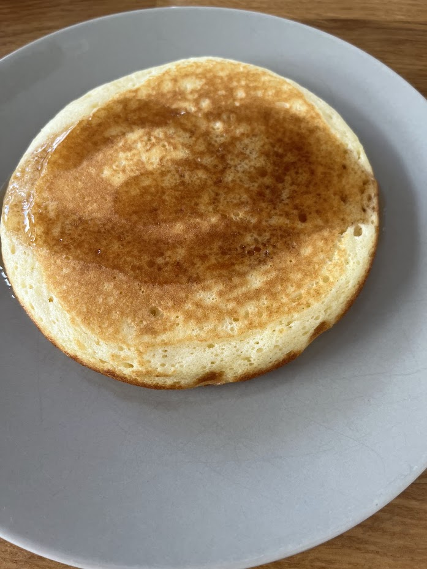
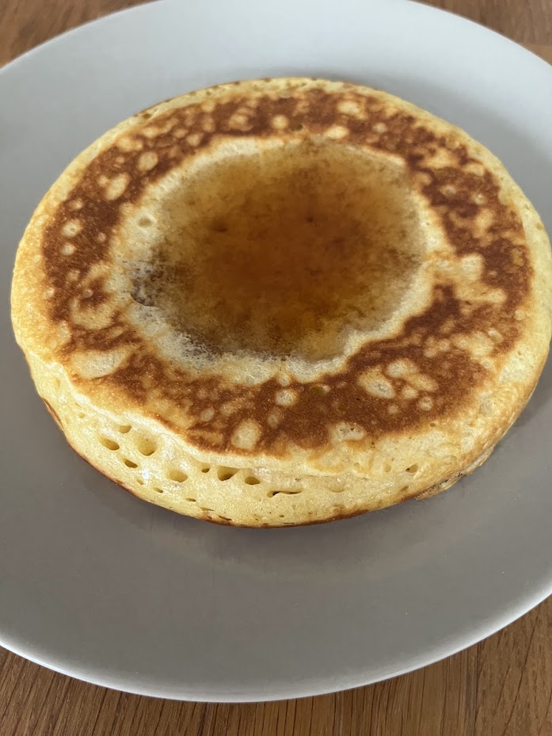
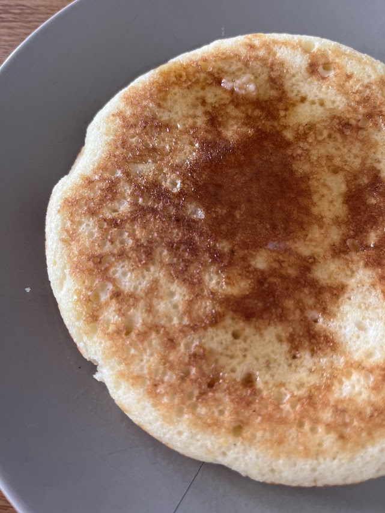

Pancakes américains de Martha Stewart
⏱️ 15 min + 15 min de repos
🔥 Facile
👥 12 à 15 pancakes



Étapes
- Faire fondre le beurre : Faites fondre les 40 g de beurre puis laissez-le tiédir.
- Mélanger les ingrédients secs : Dans un saladier, mélangez la farine, le sucre, le sel et la levure chimique à l'aide d'un fouet.
- Préparer les ingrédients liquides : Dans un bol, mélangez le lait et l'œuf.
- Former la pâte : Creusez un puits au centre des ingrédients secs puis versez le mélange lait-œuf.
- Ajouter le beurre : Incorporez le beurre fondu refroidi.
- Mélanger sans insister : Fouettez juste assez pour amalgamer les ingrédients. Il est normal qu'il reste quelques petits grumeaux.
- Laisser reposer : Laissez la pâte reposer environ 15 minutes. Des bulles vont apparaître à la surface.
- Chauffer la poêle : Badigeonnez légèrement la crêpière ou la poêle de beurre fondu.
- Cuire les pancakes : Versez une louche de pâte sans l'étaler. Laissez cuire jusqu'à l'apparition de bulles à la surface.
- Retourner : Retournez le pancake et poursuivez la cuisson environ une minute sur la seconde face.
- Répéter : Continuez jusqu'à épuisement de la pâte.
Conseils de Gigi
Ne travaillez pas trop la pâte. Quelques grumeaux permettent d'obtenir des pancakes plus moelleux et plus épais.
Remarques
Martha Stewart conseille de préchauffer une plaque dans un four à 200°C. Les pancakes cuits peuvent être déposés sur cette plaque puis recouverts de papier aluminium afin de rester bien chauds jusqu'au service.
Pour servir
Accompagnez ces pancakes de sirop d'érable, de miel, de fruits frais, de pâte à tartiner ou simplement d'une noix de beurre.